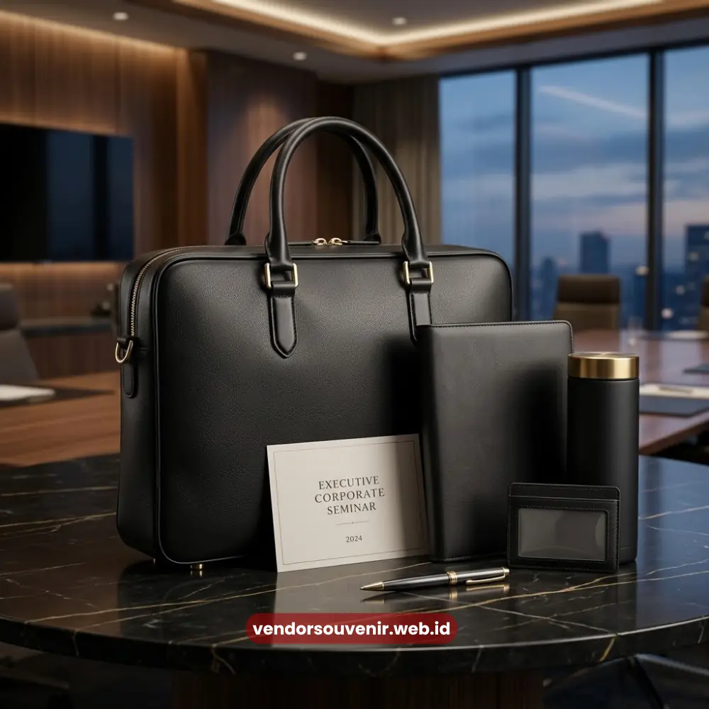

Daftar Isi
Tas seminar kit custom adalah tas cetak logo yang dirancang khusus untuk membawa perlengkapan peserta seminar, workshop, atau pelatihan sekaligus menjadi media branding perusahaan.
Tas ini umumnya berisi notes, pulpen, flashdisk, dan materi acara dalam satu paket rapi. Tas seminar kit custom berfungsi ganda sebagai wadah perlengkapan sekaligus media branding.
- Bahan yang umum digunakan meliputi kanvas, spunbond, dan parasut sesuai anggaran dan kebutuhan.
- Cetak logo dapat dilakukan dengan sablon, bordir, atau digital printing tergantung desain.
- Harga bervariasi tergantung bahan, ukuran, teknik cetak, dan jumlah pemesanan.
- Pemesanan dalam jumlah besar umumnya mendapatkan penyesuaian harga per unit.
Apa Itu Tas Seminar Kit Custom?
Tas seminar kit custom adalah tas dengan desain dan cetakan logo yang dibuat khusus untuk kebutuhan acara seminar, konferensi, atau pelatihan korporat.
Tas ini berbeda dari tas biasa karena dirancang mengikuti identitas visual perusahaan, mulai dari warna, logo, hingga slogan acara.
Secara fungsi, tas ini menjadi wadah utama bagi peserta untuk membawa pulang seluruh materi seminar dalam satu kemasan yang rapi dan mudah dibawa.
Bagi penyelenggara, tas ini juga berfungsi sebagai media promosi berjalan karena logo perusahaan akan terlihat selama dan setelah acara berlangsung.
Mengapa Tas Seminar Kit Custom Penting untuk Event Korporat?
Tas seminar kit custom penting karena memberikan kesan profesional sekaligus memperkuat identitas brand di mata peserta dan mitra bisnis.
Selain fungsi praktis membawa perlengkapan, tas ini menjadi representasi visual pertama yang dilihat peserta saat registrasi acara.
Kesan pertama yang rapi dan konsisten dengan identitas perusahaan dapat meningkatkan persepsi kredibilitas penyelenggara.
Selain itu, tas yang dipakai ulang oleh peserta setelah acara turut memperpanjang durasi eksposur brand tanpa biaya tambahan.
Siapa yang Membutuhkan Tas Seminar Kit Custom?
Tas seminar kit custom umumnya dibutuhkan oleh divisi HR dan corporate secretary perusahaan, event organizer, instansi pemerintah, universitas, serta lembaga pelatihan yang rutin menyelenggarakan seminar atau workshop.
Kebutuhan ini juga meluas ke perusahaan yang mengadakan pelatihan internal, gathering, hingga acara peluncuran produk yang melibatkan banyak peserta eksternal. Setiap segmen memiliki preferensi bahan dan desain yang berbeda menyesuaikan citra acara.
Bahan Apa yang Digunakan untuk Tas Seminar Kit Custom?
Bahan tas seminar kit custom yang umum digunakan meliputi kanvas, spunbond, parasut, dan drill, masing-masing dengan karakteristik ketahanan dan tampilan berbeda.
Pemilihan bahan memengaruhi kesan premium sekaligus daya tahan tas dalam pemakaian jangka panjang.
Kanvas dipilih karena tampilannya yang solid dan cocok untuk sablon maupun bordir.
Spunbond lebih ringan dan ekonomis, sering digunakan untuk seminar dengan jumlah peserta besar.
Parasut menawarkan ketahanan terhadap air, sedangkan drill memberikan kesan lebih formal dan tebal.
Bagaimana Cara Memilih Bahan yang Tepat?
Pemilihan bahan tas seminar kit custom sebaiknya disesuaikan dengan anggaran, jumlah pemesanan, dan kesan yang ingin ditampilkan pada acara.
Untuk acara formal berskala instansi, bahan kanvas atau drill lebih direkomendasikan karena kesan kokoh dan elegan.
Sementara untuk acara dengan jumlah peserta besar dan anggaran terbatas, bahan spunbond menjadi pilihan yang efisien tanpa mengurangi fungsi utama sebagai wadah seminar kit.

Isi Seminar Kit dan Tas Custom yang Sering Digunakan
Bagaimana Proses Cetak Logo pada Tas Seminar Kit Custom?
Proses cetak logo pada tas seminar kit custom umumnya menggunakan teknik sablon, bordir, atau digital printing yang dipilih berdasarkan kompleksitas desain dan bahan tas.
Setiap teknik memiliki keunggulan tersendiri dalam hal daya tahan warna dan detail visual.
Sablon cocok untuk desain logo dengan warna solid dan biaya lebih terjangkau untuk jumlah besar.
Bordir memberikan kesan premium dan tahan lama, ideal untuk logo sederhana. Digital printing memungkinkan cetakan logo full color dengan detail tinggi, cocok untuk desain yang lebih kompleks.
Apa Perbedaan Sablon, Bordir, dan Digital Printing?
Perbedaan utama sablon, bordir, dan digital printing terletak pada teknik aplikasi, daya tahan, dan tingkat detail warna yang dihasilkan pada permukaan tas.
Sablon menempelkan tinta di permukaan kain, bordir menjahit benang membentuk logo, sedangkan digital printing mencetak gambar secara langsung dengan resolusi tinggi.
Untuk kebutuhan korporat dengan logo multi-warna atau gradasi, digital printing menjadi pilihan paling akurat merepresentasikan identitas visual perusahaan.
Sementara logo sederhana satu hingga dua warna lebih efisien menggunakan sablon atau bordir.
Berapa Kisaran Biaya Tas Seminar Kit Custom?
Biaya tas seminar kit custom bervariasi tergantung bahan, ukuran, teknik cetak, dan jumlah pemesanan, dengan harga per unit yang cenderung lebih efisien pada pemesanan skala besar.
Industri percetakan souvenir dan MICE di Indonesia umumnya mencatat tren permintaan tas custom yang meningkat setiap tahun menjelang musim seminar dan pelatihan korporat.
Sebagai gambaran umum, tas berbahan spunbond memiliki harga paling ekonomis, diikuti kanvas pada kisaran menengah, dan drill atau kombinasi bahan premium pada kisaran lebih tinggi.
Faktor tambahan seperti aksesori ritsleting, tali, dan kantong tambahan turut memengaruhi kalkulasi harga akhir.
Apa Saja Faktor yang Memengaruhi Harga Tas Seminar Kit Custom?
Harga tas seminar kit custom dipengaruhi oleh jenis bahan, teknik cetak logo, ukuran tas, jumlah warna desain, dan volume pemesanan.
Semakin kompleks desain dan semakin premium bahan yang dipilih, umumnya semakin tinggi pula biaya produksinya.
Volume pemesanan menjadi faktor paling signifikan karena produksi massal memungkinkan efisiensi biaya bahan baku dan proses cetak.
Oleh karena itu, banyak instansi memilih memesan jauh hari sebelum acara agar mendapatkan penyesuaian harga yang lebih optimal.
Apa Kesalahan Umum saat Memesan Tas Seminar Kit Custom?
Kesalahan umum saat memesan tas seminar kit custom meliputi pemesanan mendadak tanpa mempertimbangkan waktu produksi, pemilihan bahan yang tidak sesuai fungsi acara, dan desain logo yang kurang disesuaikan dengan teknik cetak yang dipilih.
Pemesanan mendadak berisiko membuat kualitas produksi terburu-buru atau bahkan tidak selesai tepat waktu.
Selain itu, mengabaikan konsultasi teknis desain dapat menyebabkan hasil cetak logo tidak sesuai ekspektasi, terutama untuk logo dengan detail atau gradasi warna.
Tas seminar kit custom bukan sekadar wadah perlengkapan, melainkan investasi branding yang memperkuat citra profesional perusahaan di setiap acara.
Pemilihan bahan, teknik cetak, dan waktu pemesanan yang tepat akan menentukan hasil akhir yang optimal.

Solusi Souvenir dari Vendor Terpercaya
Butuh Bantuan Merancang Tas Seminar Kit Custom?
Tim ahli kami siap membantu Anda menyusun paket seminar eksklusif yang menarik.
Pilihan barang akan disesuaikan dengan ketersediaan budget dan kebutuhan Anda.
Seluruh desain tas akan kami selaraskan dengan identitas visual perusahaan Anda.
Dapatkan penawaran harga terbaik untuk pesanan massal!
FAQ Seputar Tas Seminar Kit Custom
Apa itu tas seminar kit custom?
Tas seminar kit custom adalah tas cetak logo yang dirancang khusus untuk membawa perlengkapan peserta seminar sekaligus menjadi media branding perusahaan.
Berapa minimal pemesanan tas seminar kit custom?
Minimal pemesanan umumnya disesuaikan dengan kebijakan produksi dan dapat dikonsultasikan langsung bersama VendorSouvenir.web.id agar sesuai kebutuhan acara Anda.
Bahan apa yang paling direkomendasikan untuk tas seminar kit custom?
Bahan yang direkomendasikan tergantung kebutuhan acara; kanvas dan drill cocok untuk kesan formal, sedangkan spunbond lebih ekonomis untuk peserta dalam jumlah besar.
Berapa lama waktu produksi tas seminar kit custom?
Waktu produksi bervariasi tergantung jumlah pesanan, kompleksitas desain, dan teknik cetak, sehingga disarankan memesan jauh hari sebelum tanggal acara.
Apakah desain logo bisa disesuaikan sepenuhnya?
Ya, desain logo pada tas seminar kit custom dapat disesuaikan sepenuhnya dengan identitas visual perusahaan.
Maroon Souvenir
Partner Corporate Gift terpercaya di Indonesia. Berpengalaman melayani ratusan perusahaan sejak 2018.
Lihat Portofolio Kami